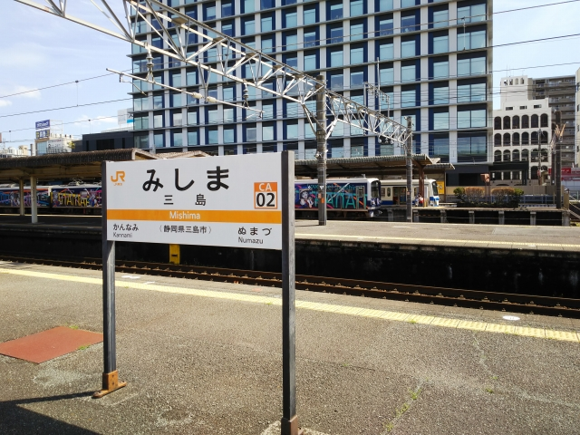

2022（R4） 4月5～6日 稲沢貨物線と小川温泉
久々にブチキレました。そりゃ、お前らが悪いやろ・・・ お～怖っ！ （(c)ガリガリガリクソン）
阪急ファンへのサービスショットでスタート。懐かしの大宮駅にて。
珍しい「快速」です。京都線のラッシュ時しか走ってまへん。
そうです、夜に京都入り。今日は市内で泊まります。
早朝の京都駅。
そう、京都発の始発に乗るために、京都に前泊した
んです。
コロナの影響でホテル代が安なってる今やから出来
る芸当ですね。
改悪としか言えなかったこの春のダイヤ改正ですが、数少ない明るい話題
が、ホームライナー大垣です。
これが京都発の始発やないと、間に合わないんすよね。
始発の米原行は、かなりな数の乗客が乗ってて、どこで降りるんやろと思っ
たら、最後まで結構混んだままでした。
大垣駅到着。
ホームライナー大垣は、名古屋行の着席サービス列
車です。
朝２本、夕方２本のみで、しらさぎの回送を兼ねて
ます
名古屋まで４０分。３３０円で特急車両に乗れるの
で、なかなかお得ですね。
ライナー券は自動券売機でしか買えないんすが、ま
さかの指定席。それもＢ席って、どーゆーこと！？
好きなとこに座らせてよ・・・
この時間帯に乗るのは初めてですが、初めて線路横
にある笠松競馬の馬が調教してる姿を見れました。
なんでこの列車があがるか、と言いますと、実は貨
物線を走行するんです！
一ノ宮を過ぎて、貨物線に入ってます。
運よく、桟に邪魔されない右側の席が空いてたので
そっちに移ってかぶりつき状態。
青春１８旅の時、大垣からの列車に乗るときは左側
の席に座ります。理由は稲沢機関区が左側に広がる
からなんですけど、なんと、右側に機関区がっ！
これは貴重な車窓です！
関西では見られない機関車たむろしてます。
といいながら、稲沢貨物線、実はほとんど東海道線
の横を走ってます。
機関区の横以外は、特に珍しい車窓風景はございま
せん・・・
プラス３３０円の価値はありました。（前泊するほ
どの価値があったかは、不明です。単なる酔狂のよ
うな・・・）

実はこの貨物線乗車で、本日の目的の半分以上は達
成してしまいました。
で、そのまま東上していって、三島までやってきま
した。
この改正で、静岡地区にも、中央線からまわされた
クロスシート車が投入されたって聞いて期待してた
のに、ロングシート車しか見かけんかったぞ・・・
※切れてませんよ
奥に、伊豆箱根鉄道が停まってますね。

三島駅の独特の屋根は変わってないですね。
久々に、伊豆箱根鉄道に乗ってみます。
なんと、自動改札機やん！
一日乗車券を買って、乗り込みます。
三島の近郊は昭和っぽい駅が何個かあって、興味そ
そられます。
そーゆー駅ではないけど、途中で一旦降ります。
大場駅です。
おっ、構内踏切が残ってる
ここには本社と車庫があるんですよ。
車庫まで行ってみます。
踏切のマークも伊豆箱根鉄道！

本社の建物を過ぎると、車庫が見えてきました。
道路を横切るとは珍しい立地ですね。
凸型電機が停まってるのが見えます。
近寄って撮影。

大場駅に戻って修善寺に向かいます。
実は伊豆箱根線内だけなら、踊り子も２００円で乗
れるんです。
安いので乗ってみます。
硬券の特急券とは意外です。
ローカル私鉄なのにほぼ１５分毎に来るとはなかなか便利な
鉄道です。
踊り子がやってきました。
もちろん、地元の人は誰も乗りません。
中もガラすき。
この車両、初めて乗りましたが、ちょっと安っぽい
な。
終着の修善寺に到着です。
昔ながらの手洗い場が残ってますね。
構内はかなり広いです。さすが踊り子が直通するだ
けあるわ。
今年の大河ゆかりの地だけにのぼりがよーさんはた
めいてます。
２０年ぶりぐらいに来たけど、駅は新しくなってま
した。
駅前から東海バスに乗り込みます。

１０分ほど乗って上白岩のバス停で下車します。
返りのバスの時刻表をチェックして、のどかな光景の中、１０分ほど
歩くと、見えてきました！
じゃ～ん！小川温泉の共同浴場です。
やってる？という感じですが、やってました。
すいてそうで良かった。

入ってたおっちゃん達もちょうどあがったとこで、
独り占めできました。
きさくな常連さんで、地元の人との会話も珍しく楽
しめました。
ちょっとお湯は熱すぎですわ。
浴室は こんな感じ
上白岩のバス停に戻って修善寺に戻るバスを待ちますが、いくら待って
もやって来ず。
しびれを切らしてバスの営業所に電話すると、「今日は学休日なので運
行してません」て・・・
こっちは前日にＨＰで調べとるし、実際のバス停の時刻表にもそんなこ
と書いてないので、その旨を電話で伝えましたが（どういう感じで伝え
たかは想像にお任せします）、もうどーしようもなし。
帰りに昭和っぽい駅に降りれるかと思ってけど、それどころか、次のバ
スでは最終もギリギリであせってたら、こんな時に限って、次のバスも
若干遅れてきやがって、結局最終に間に合わないことに・・・
修善寺の駅にＪＴＢの時刻表などあるわけもなく、不便なスマホの時刻
表で必死に調べて、掛川浜松間をこだまに乗換えれば最安で最終に間に
合うことを見つけたけど、掛川の乗換え時間が３分！
三島に行く電車からは富士山が綺麗に見えたけど、車窓を楽しむ余裕な
し・・・。電車の中は生徒で一杯。学休日とちゃうんか！ボケっ！！
三島からの電車はなんとか定時運行してくれたので、掛川の乗換えはセ
ーフでした。
まぁ次の日、新城で地震があって東海道線がかなり止まったはずなので、
当日中に帰れたこともあって苦情を言うのはやめたりました。
大人になったもんやで・・・
この春シリーズの青春１８切符は、初めて息子と１枚を共有するという
思い出深いものとなりました。
鉄道をとりまく環境年々厳しくなってきてますが、青春１８切符は今後
も末永く続いていってほしいもんです。